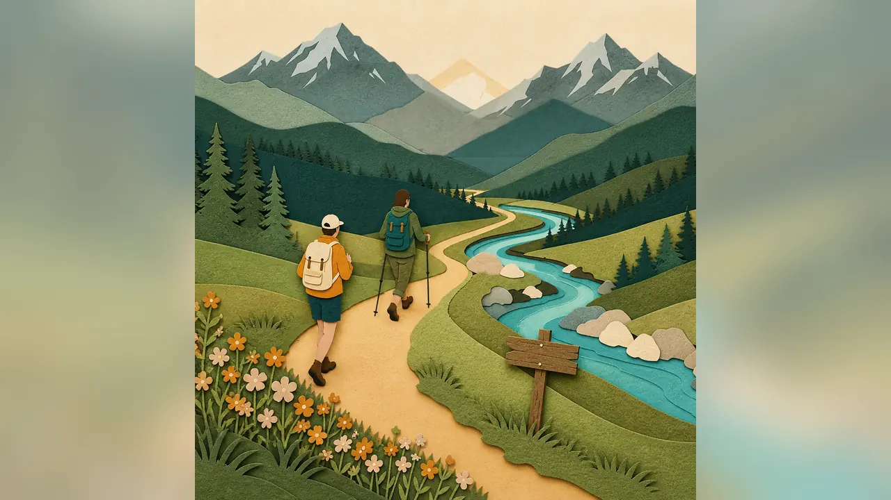
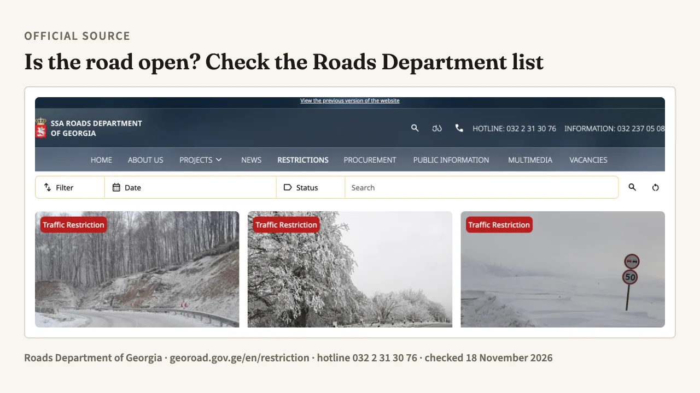

- Elevation
- 1,750 m
- From Tbilisi
- 157 km
- By road
- about 3 hours
- Mount Kazbek
- 5,054 m
This page is about Georgia the country, not the US state, and is part of our guide to healthcare in Georgia. Checked on 18 November 2026.
Kazbegi or Stepantsminda? Where it is
They are two names for the same place. Stepantsminda is the official name of the town; the wider district is Kazbegi municipality, as the Ministry of Infrastructure calls it.
The town lies in Mtskheta-Mtianeti, in eastern Georgia, 157 km from the capital (Georgian National Tourism Administration). You reach it by driving north along the Georgian Military Road.
Past the town, the road keeps going north through the Dariali valley to the Georgia–Russia border.
How high is Kazbegi? Altitude of the town, Gergeti and Mount Kazbek
The town sits at 1,750 m, and the trails around it climb well above that. Here are the heights we could confirm from official pages.
| Place | Height | Source |
|---|---|---|
| Stepantsminda (town) | 1,750 m | georgia.travel |
| Gergeti church | Above the town; no official figure found | — |
| Village in the Truso valley | 2,400 m | georgia.travel |
| Summit of Mount Kazbek | 5,054 m, Georgia's third-highest mountain | georgia.travel |
Other websites quote different numbers for the town and the church; we use only the official ones.
Altitude sickness: what UK health advice says
It is a named risk here. The UK government's health advice for Georgia says: "Altitude sickness is a risk in parts of Georgia, including Gudauri ski resort, Mount Kazbegi, and Mount Tetnuldi."
TravelHealthPro's altitude illness factsheet explains the basics:
- It usually starts above 2,500 m, though some people get it lower. Symptoms tend to appear 6 to 10 hours after the climb.
- The typical sign is a headache plus nausea, vomiting, loss of appetite, dizziness, tiredness or weakness. Treat any new symptom after going up as altitude illness until proven otherwise.
- Go no higher and rest. Ordinary painkillers and anti-nausea medicine can help; symptoms often settle in 1 to 3 days.
- Go down if you feel worse or are no better after 1 to 2 days.
- Severe forms affect the brain or lungs and are life-threatening: get urgent medical help and go down.
Go up gradually, with rest days. If you have a long-term illness, see a doctor before the trip. Our page on altitude and mountain injuries has more detail.

Tbilisi to Kazbegi: the Georgian Military Road
Allow about three hours by road for the 157 km. The town page of the national tourism administration lists the trip from the capital at 2 hours 55 minutes; it does not say by what kind of transport.
The route heads north across the Georgian Military Road and over the Jvari Pass, which matters in winter (see below). The tourism administration's own tour route stops on the way at the 16th-century Ananuri fortress (four-day tour).
There are four ways to make the trip. We found no published prices or timetables, so we give none.
- Van (marshrutka). Shared vans run from Tbilisi. Ask locally where they leave from and when.
- Taxi or private driver. Agree the route and any stops before you set off.
- Organised tour. Handy if you do not want to drive mountain roads yourself.
- Your own car. Check the road status first, and in winter read the tyre rules below. UK safety advice notes that roads outside city centres are often badly lit and in poor condition.
Kazbegi day trip from Tbilisi
It is possible, but it makes for a very long day. About three hours each way means roughly six hours in a vehicle before you see anything.
You also go from the capital up to 1,750 m and maybe higher on the same day, which leaves little time to adjust. In winter, a road closure can stop you getting back that evening.
The tourism administration is clear on what works better: "Even two to three days, at the very minimum, should be fine for a leisurely visit" (what to do in the area). If you only have one day, keep the plan simple: the church and the town.
Gergeti Trinity Church
This is the 14th-century church that stands above the town. Georgia's tourism administration says it "was built during the 14th century" and calls it "the crown of Stepantsminda" (town page).
It is also known as Tsminda Sameba. The National Encyclopedia of Georgia adds that, for centuries, the Khevi Council of Elders met here.
What to wear: visitors report that women are asked to cover their heads and wear a skirt, and that shoulders and knees should be covered. We found no official rule, so a scarf in your bag is the easy answer.

How to get up: the hike to Gergeti, a taxi or a 4x4
You have three options, according to georgia.travel: "there is a paved road from Stepantsminda to Gergeti you can walk up, or you can also take a taxi or jeep tour with a guide."
The road was built in 2018. The Ministry of Infrastructure reported that a 5.6 km access road from the town to the church, with a cement concrete surface, was finished on 30 November 2018. You can walk along it or ride up it.
There is also a footpath, and georgia.travel is honest about it: the church "is reachable through a very long, exhausting hike or a very short drive". We found no official length or walking time for the path, so we do not give one.
A few practical points:
- Go at your own pace and allow plenty of time.
- You are climbing above 1,750 m: if a new headache starts, stop going up and rest.
Things to do in Kazbegi: hikes and valleys
The tourism administration lists several walks and sights around the town. Its pages give no lengths, walking times or difficulty grades, and neither do we.
Kazbegi National Park is a protected area set out in Georgian law. We could not open the park page of the Agency of Protected Areas, so we cannot say which trails lie inside it or what rules apply there.
Gergeti Glacier
This is the big high-mountain hike. The tourism site says the trek "is for those who seek to experience the raw, untamed beauty that is the Caucasus" and is "best done with some preparation or perhaps even a guide".
Take that seriously. You go far above the town, into the area where UK advice names altitude sickness as a risk. UK safety advice also warns: "If you get into trouble during hiking, skiing, adventure travel or extreme sports, the emergency response may be limited."
Before you go, check that your travel policy covers mountain hiking at altitude (see insurance below).
Juta
The tourism administration calls this valley "The Georgian Dolomites". Its two-day tour page says backpackers fill the trail every season from the end of May until October.

Truso Valley
The valley is about 22 km from the town, and you can get there "by an offroad car, on horseback and of course, hike" (Truso Valley page). The site describes it as a site of geological significance, with mineral springs and historical ruins.
Bring your passport or ID. The same page says you will need it "to get the permit to cross over to the village above the famous Zakagori Fortress, as the border to Russia is relatively close-by". It does not say who issues the permit or where, so ask locally before you set off.
Gveleti waterfall
Time it for late summer or autumn. georgia.travel says the waterfall is "even more impressive from August to October".
Dariali
North of the town, the road follows the Dariali valley to the border with Russia. The Dariali Monastery Complex "is set in a gorge of Dariali not far from the borderline", according to the tourism administration.
Mount Kazbek
This is Georgia's third-highest mountain and, in georgia.travel's words, "a favorite among mountaineers". Its summit is at 5,054 m.
A climb is a serious expedition, not a walk from town. It goes far above the 2,500 m mark where altitude illness usually begins.
Help can take time to arrive. On 5 April 2018, the Ministry of Internal Affairs reported a 112 call about an injured foreign climber on the mountain. It said that "due to complicated meteorological conditions, despite several attempts", the helicopter had not yet managed to land and move the injured person to hospital.
Kazbegi in winter: is the road open?
It can close in bad weather, so check before you set off. UK safety advice warns that "snow at higher altitudes can affect roads and bridges", which can make a trip difficult or impossible.
The Jvari Pass and road closures
On the way north, the road crosses the Jvari Pass. Closures in bad weather are announced for the Gudauri–Kobi section of the Mtskheta–Stepantsminda–Larsi route. Where to check before you leave:
- The Restrictions page of the Roads Department. It has an English version that lists each restriction with its date and time.
- The Roads Department hotline: 032 2 31 30 76.

One example: on 13 December 2024, the Roads Department closed the Gudauri–Kobi section "to all types of transport" because of "adverse weather conditions", the public broadcaster reported. That was a single event, not the current status.
Restrictions can also apply only to some vehicles. On 9 November 2026, for instance, the Roads Department posted that traffic for trailers and semi-trailers had resumed on the same section.
Winter tyres. From 1 December to 1 March, winter tyres are compulsory on certain sections of road, the Ministry of Internal Affairs says. Depending on the weather, police can also require chains on the drive wheels.
The fine is 100 GEL and 5 points on the licence. For cars, the tyres need the snowflake mark and at least 3 mm of tread, and must be no older than 10 years. The ministry's notice does not list the sections, so if you hire a car, ask for winter tyres anyway.
Avalanches. UK advice warns: "It can be difficult to get accurate information on mountain conditions, including avalanche risks." Stay on marked routes in winter, and ask locally before any walk.
Skiing. For skiing, georgia.travel says "it is better to select Gudauri". Our guide to Gudauri altitude, ski injuries and medical help covers it.
Safety and health in Kazbegi
Overall, the tourism administration calls the area "generally quite a safe place". The real risks come from the mountains: altitude, weather and distance from full medical care.
Medical care. UK health advice says: "Outside Tbilisi, medical facilities are limited." We found no official listing of a hospital or clinic in the town. For anything serious, plan on treatment in the capital, 157 km away.
Emergencies. Dial 112 for an ambulance, fire service or police (GOV.UK, getting help). Mountain rescuers belong to the Emergency Management Service of the Ministry of Internal Affairs, and you reach them through 112 too. We found no separate local number for them. Here is how to call an ambulance on 112.
Near the boundary lines. General UK advice for the whole country: "If you plan to hike close to the administrative boundary lines, consider hiring a professional guide."
In the mountains. Remember the UK warning: if you get into trouble while hiking, "the emergency response may be limited". Tell someone your route and when you expect to be back.

Travel insurance for Kazbegi
You need a policy to enter Georgia, but it may not cover mountain activities. Since 1 January 2026, foreigners must enter with health and accident cover of 30,000 GEL, as Georgian law requires (the 2026 entry insurance rule).
UK advice is direct: "Make sure your travel insurance covers your activities." It adds that cover should include "local treatment or unexpected medical evacuation". TravelHealthPro says: "When travelling to altitude adequate travel insurance is essential."
Ordinary visitor cover may exclude sport. Take the IRAO visitor policy that we sell on 100doc.ge: its wording, clause 9.1.22, does not pay for injuries "received during participation in professional, amateur and extreme sport activities". It does not name mountain hiking at all. Its medical evacuation limit is 1,000 GEL. It pays only if the evacuation is agreed beforehand with the service centre.
That same policy, travel insurance for your trip to Georgia, meets the entry rule and suits an ordinary trip: the town, the church and the drive. It is not cover for a glacier trek or a climb. For those, look for a policy that:
- names mountaineering or mountain hiking as covered;
- covers medical evacuation, with its limit;
- mentions search and rescue.
If someone's life is at risk, dial 112 first. Approval from your insurer matters only for payment, never for getting help.
Frequently asked questions
What is the distance from Tbilisi to Kazbegi?
About 157 km, according to georgia.travel, or roughly three hours by road.
How high is Stepantsminda?
The town stands at 1,750 m above sea level. The summit above it reaches 5,054 m.
How long is the hike to Gergeti Trinity Church?
The paved access road is 5.6 km long, and you can walk up it. We found no published length or time for the footpath, so allow time and go at your own pace.
Is the road to Kazbegi open in winter?
It can close: the Gudauri–Kobi section is shut at times in bad weather. Check the Roads Department's Restrictions page or call 032 2 31 30 76 before you leave.
Is altitude sickness a risk in Kazbegi?
UK government health advice names the mountain as a risk area. With a new headache after going up, go no higher and rest; go down if it gets worse.
Is there a hospital in Kazbegi?
We found no official listing of one. UK advice says medical facilities outside Tbilisi are limited. In an emergency, dial 112.
How many days do you need in Kazbegi?
The national tourism administration suggests two to three days "at the very minimum" for a leisurely visit. A day trip is possible but long.
Sources
- Georgian National Tourism Administration: four-day SUV tour (distance and elevation)
- Georgian National Tourism Administration: town page (church, travel time, summit)
- Georgian National Tourism Administration: what to do in the area
- Georgian National Tourism Administration: Truso Valley
- Georgian National Tourism Administration: two-day tour
- Ministry of Infrastructure: new access road to Gergeti, 2018
- Roads Department of Georgia: restrictions
- Ministry of Internal Affairs: winter tyres from 1 December, 2024
- Ministry of Internal Affairs: injured climber, 2018
- GOV.UK travel advice: health
- GOV.UK travel advice: safety and security
- GOV.UK travel advice: getting help
- TravelHealthPro: altitude illness factsheet
- 1TV, Georgian Public Broadcaster: Gudauri–Kobi section closed, 13 December 2024
- Legislative Herald of Georgia: 2018 law on the national park (Georgian)
- National Encyclopedia of Georgia: Gergeti Trinity Church
This guide is general information, not medical advice: the doctor decides on your treatment.